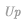

HOME PAGE
Spike Density Estimation
-
Histogram Method
-
Kernel Method
Share it with your friend
Tweet

Next:
Contents
Contents
Index
スパイク統計モデル入門
島崎秀昭
マサチューセッツ工科大学
理化学研究所 脳科学総合研究センター
Contents
はじめに
スパイク統計モデル入門
定常スパイク時系列モデル
定常ポアソン過程
指数分布
一定時間内のスパイクの個数（ポアソン分布）
一定スパイク数の待ち時間（アーラン分布）
アーラン分布とポアソン分布の関係
瞬間スパイク生成率
定常リニューアル過程
ハザード関数 (瞬間スパイク生成率)
スパイク密度分布
定常スパイク時系列の実現
分布の規格化と逆関数法
ハザード関数を用いたスパイク生成
スパイク時系列の作成
非定常スパイク時系列モデル
非定常ポアソン過程
時間伸縮
条件付きスパイク密度分布
直説法
希薄化による数値計算法
非定常リニューアル過程
変動レートの時間伸縮
条件付きスパイク密度分布
時間伸縮理論
初期スパイクの生成について
一般点過程の時間伸縮理論と尤度関数
ポアソン過程の尤度関数
一般点過程の尤度関数
スパイク時系列モデルの推定（暫定版）
スパイク密度推定
ヒストグラム密度推定 (PSTH)
カーネル密度推定
補遺 統計的推測
平均二乗誤差
最尤推定
十分統計量
フィッシャー情報量
ベイズ推定（はやわかり）
Bibliography
Index
About this document ...
© 2007 2008 2009 2010
H. Shimazaki, Ph.D.